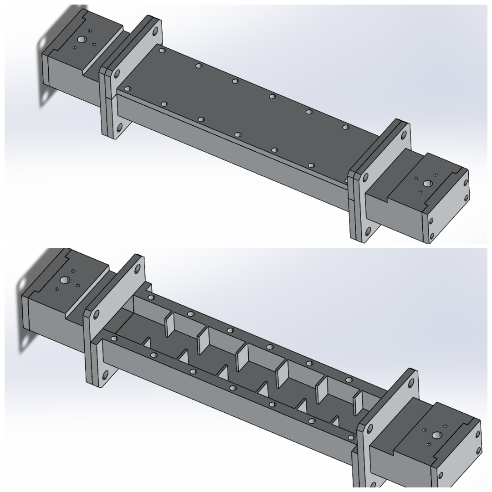

RF & Microwave Components
Waveguide Filter
This project focuses on a waveguide-based bandpass filter for X-Band applications using the standard WR-90 waveguide (dimensions: 22.86 mm × 10.16 mm). The designed filter achieves a bandwidth of 200 MHz, optimized for high selectivity and minimal insertion loss across the operating band.
